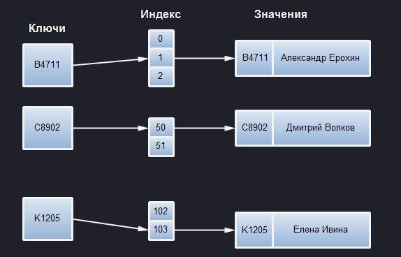
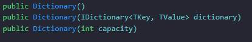
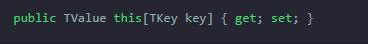
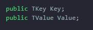
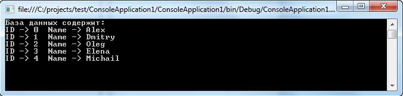

| Тема 2. Словарь в СИ Шарп. | ||
| Назад | ||
|
Dictionary – это сложная структура данных, которая позволяет обеспечить доступ к элементам по так называемому ключу. В Си Шарп для ее использования существует целая библиотека. Она носит название «коллекция Dictionary<K,V>». В соответствующем компоненте каждый элемент – это связка «ключ-значение». Основной предназначение – получение значения по его ключу. Представлен соответствующая коллекция своеобразной хеш-таблицей. Получение значения элемента через ключ производится очень быстро, приближенно к О (1). Скорость извлечения «параметра» (V) находится в прямой зависимости от качества используемого алгоритма хеширования для типа, прописанного для ключа (K). При работе с dictionary необходимо учесть следующее:
Dictionaries – полезная коллекция, облегчающая разработку программного обеспечения. Главное знать, как правильно ее задействовать при составлении кода. Упрощенная модель – примерНиже – упрощенная модель словаря в Си Шарп. Здесь ключи – это идентификаторы сотрудников. Они формируются в хеш. Далее происходит создание числа для ассоциаций индекса со значением. Index будет содержать ссылку на значение.  Соответствующий пример – упрощенный вариант. Связано это с тем, что существует возможность того, что единственное вхождение индекса ассоциируется с несколькими значениями. Index предусматривает хранение под видом своеобразного дерева. При работе с .Net Framework можно задействовать сразу несколько классов словаря. Главный среди них – Dictionary<TKey, TValue>. О типах ключаDictionary tkey может быть разного типа. Главное условие здесь – предопределение метода GetHashCode() класса Object. Каждый раз, когда соответствующий class словаря должен обнаружить нахождение элемента, осуществляется вызов упомянутого метода. Полученный результат будет применяться словариком для вычисления индекса размещения интересующего компонента. Здесь достаточно усвоить то, что в процессе задействованы простые числа. Емкость dictionary будет выражаться соответствующими значениями. При реализации GetHashCode() требуется удовлетворить такие запросы:
Когда два ключа возвращают хеш-значения с один и тем же индексом, класс словаря будет искать ближайшее свободное пространство для сохранения второго элемента. Соответствующий процесс сопровождается неким поиском для извлечения «параметра» в будущем. Подобное поведение приводит к серьезному ущербу производительности. Если key множество дает один и те же indexes, возникает рост вероятности возникновения критических ошибок. Кроме GetHashCode() тип ключа должен реализовывать метод IEquable<T>.Equals() или проводить переопределение метода Equals() класса Object. Соответствующий компонент будет применяться для сравнения ключей dict. Словарь проверяет keys A и B на схожесть, вызывая A.Equals(B). Это значит, что при истинности полученного сравнения A.GetHashCode() и B.GetHashCode() всегда возвращают один и тот же хеш-код. Несколько слов о классеКласс Dictionary<Tkey, TValue> реализовывает интерфейсы:
Два последних варианта имеют поддержку сериализации списков. Словари динамические. Они при необходимости могут расширяться. Рассматриваемый класс предусматривает огромное множество конструкторов:  Выше – некоторые из них. Здесь:
Все это поможет оптимизировать поиск необходимой информации при обработке программного кода. МетодыРассматриваемый класс предусматривает разнообразные методы:
Этой информации будет достаточно для того, чтобы начать полноценную работу с dictionary, а также для того, чтобы найти интересующий программиста элемент. Но есть еще весьма важные моменты, которые пригодятся новичкам и продвинутым разработчикам на Си Шарп. СвойстваРассматривая ключи и значения, dictionary и его элементы, нужно помнить – изучаемый класс предусматривает определение собственный свойств. Они дополняют те, что предоставляются реализованными интерфейсами. В число таких свойств можно отнести:
При работе с соответствующим элементом языка нужно учесть – параметры и keys доступны отдельными списками. Для этого необходимо использовать в коде свойства Keys и Values. Коллекции типа Dictionary<Tkey, TValue>.KeyCollection и Dictionary<TKey, TValue>.ValueCollection проходят реализацию в качестве обобщенных. Не обобщенно применяются формы интерфейсов ICollection, а также IEnumerable. ИндексаторВ рассмотренном классе Dictionary<TKey, TValue> используется еще один важный элемент – индексатор. Он определен в интерфейсе IDictionary<TKey, TValue>:  Он нужен для того, чтобы получить и установить «параметр» элемента коллекции. Помогает добавлять в collection новые составляющие. В виде индекса здесь выступит ключ элемента, а не сам index. При перечислении коллекции типа Dictionary<TKey, TValue> из нее будут возвращаться пары key-value в виде формы структуры KeyValuePair<TKey, TValue> с определением двух полей:  Они содержат key или value соответствующих элементов коллекции. Структура KeyValuePair не имеет непосредственного применения. Связано это с тем, что средства класса Dictionary дают возможность отдельной работы с ключами и «параметрами». При перечислении коллекции типа Dictionary<K, V> (пример – в foreach) в виде перечисляемых элементов (объектов) предстанут пары вида KeyValuePair. Пример кодаНиже – пример использования рассмотренного компонента в Си Шарп: using System;
using System.Collections.Generic;
namespace ConsoleApplication1
{
class UserInfo
{
// Метод, реализующий словарь
public static Dictionary string MyDic(int i)
{
Dictionary
При обработке соответствующего кода на экране появится следующий результат: 
|
||
| Конспект подготовлен Бакулиным А. М. 2012 год. | ||